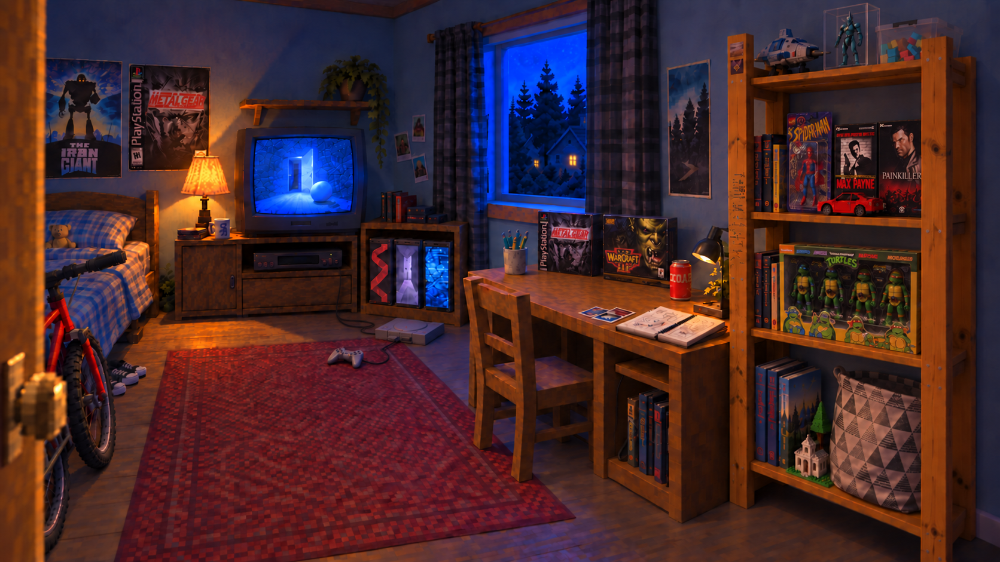
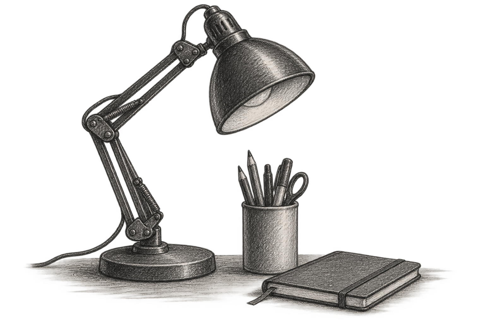
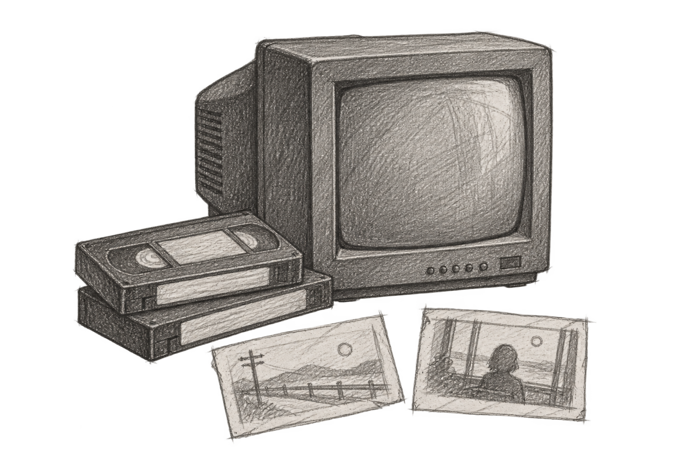

Свет уже горит…
ПО ТУ СТОРОНУ ДВЕРИ
В этом браузере не удалось включить 3D. Можно рассмотреть концепт комнаты и обложки кассет.
AFTER MIDNIGHT / VHS
Демонстрационные кассеты для проверки просмотра. Авторские видео будут добавлены отдельно.
КАССЕТА 01
ПОСЛЕ ПОЛУНОЧИ

ОСВАИВАЙТЕСЬ
Функция готовится. Сейчас местоположение не запрашивается и погодные данные не загружаются. Вид комнаты не меняется.
После включения и разрешения браузера сайт однократно определит местоположение для погоды за окном. Координаты будут округлены до 0,1° (около 11 км по широте) и переданы Open-Meteo. Этот сервис также увидит ваш IP-адрес.
Точные координаты не сохраняются приложением. Округлённые координаты используются только для одного запроса; погодные данные остаются в памяти до отключения или закрытия страницы. Cookies, история перемещений и фоновое отслеживание для этой функции не используются.
После запуска функция будет добровольной: можно отказаться, продолжить без неё или отключить в любой момент. Правила внешнего сервиса: Open-Meteo / Privacy.
Open-Meteo может хранить журналы запросов с координатами до 90 дней. Отключение удаляет данные только из этой страницы.
Сбор данных выключен.
Кнопки внизу перенесут к телевизору и столу. Кассеты всегда доступны через меню сверху.
Звук включается только по вашему желанию.
Playstation 1 with Crash Bandicoot Disc — Juan Galindo, Sketchfab, CC BY 4.0. Оптимизирована для сайта.
MindStream — DST · Searching — yd. CC0.
ЛИЧНЫЕ ЗАМЕТКИ


СТЕРЕО / КАССЕТА A
Источник записи / CC0
Авторы музыки и звуков
КОЛЛЕКЦИЯ
Для интерактивной комнаты нужен JavaScript.